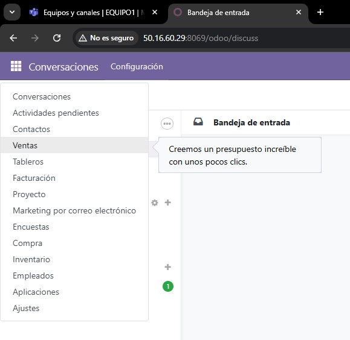
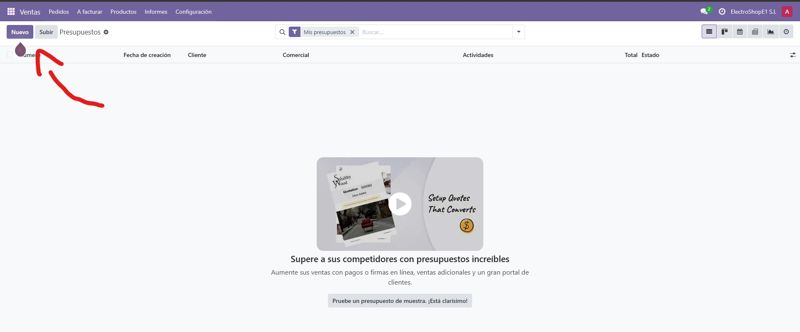

📘 Documentación Odoo - Tarea 6
📦 Paso 5: Gestión de una veta - Pedidos de clientes
La gestión de ventas de Odoo nos permite poder gestionar las ventas de todos los productos de la empresa.
📜 4.1 Creación de un Pedido de Venta
🔹 Pasos para realizar una venta en Odoo:
Para acceder al panel de ventas nos dirijiremos a los puntos de arriba a la izquierda.

Una vez dentro del apartado de ventas nos dirijiremos arriba a la izquerda donde pone "nuevo". 
Dentro, tenemos que empezar a personalizar las compras, en este caso empezaremos con asignar unos clientes, para el ejemplo he escogido "Disney".

Después de eso, añadimos el producto que desearían comprar, en este caso van a ser una gráfica de ASUS.

Una vez finalizado, podemos ver en el panel desplegable hay una categoria donde pone "inventario", dentro están todos los productos que están a la venta con su cantidad, precio, etc...

Además de un resumen de todos los datos y estadisticas.